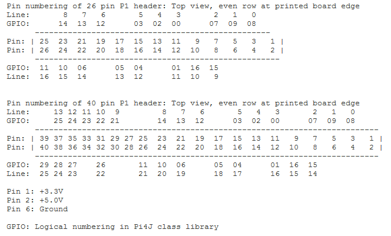

The General Purpose Input Output system of the Raspberry Pi uses 17 data lines (Rev.B board: 26) that can be configured individually as digital input or digital output using 3.3V logic levels.There are two ways of numbering the IO pins on a Raspberry Pi within raspi.GPIO. The first and default mode is using the BOARD numbering system. This refers to the pin numbers 1..26 (Rev.B board: 1..40) on the P1 header of the Raspberry Pi board. The second uses the LINE numbering system where pins are numbered in a line sequence on one the side of the header followed by the pins on the other side.
|  |
You must run the program as root user (with supervisor rights) because it needs access to the GPIO system.
| Method | Action |
| GPIO.BOARD |
Constant for setmode(): Channel numbering using header pin numbers(default). Value: 0 |
| GPIO.LINE | Constant for setmode(): Channel numbering in rows for 26 pin header. Value: 1 |
| GPIO.LINE40 | Constant for setmode(): Channel numbering in rows for 40 pin header. Value: 2 |
| GPIO.OUT | Constant for setup(): Output channel. Value: 0 |
| GPIO.IN | Constant for setup(): Input channel. Value: 1 |
| GPIO.LOW | Logic level low, corresponds to 0 V. Value: 0 |
| GPIO.HIGH | Logic level high, corresponds to 3.3 V. Value: 1 |
| GPIO.PUD_DOWN | Constant for setup(): Internal pull-down resistor. Value: 2 |
| GPIO.PUD_UP | Constant for setup(): Internal pull-up resistor. Value: 3 |
| GPIO.PUD_NONE | Constant for setup(): No internal pull-up/down resistor (floating). Value: 4 |
| GPIO.RISING | Constant for add_event_detect(): Trigger event on rising edge |
| GPIO.FALLING | Constant for add_event_detect(): Trigger event on falling edge |
| GPIO.BOTH | Constant for add_event_detect(): Trigger event on both edges |
| GPIO.setmode(mode) | selects channel numbering mode: BOARD or LINE |
| GPIO.setup(channel, ioControl, option) | selects the channel as input or output. Output: option HIGH/LOW sets initial value; Input: option PUD_UP, PUD_DOWN, PUD_NONE selects internal pull-up/down resistor |
| GPIO.cleanup() | releases all resources and restores the default values |
| GPIO.out(channel, state) | sets the logical level of an output channel |
| GPIO.input(channel) | returns the state of an input channel (or the last setting of an output channel) |
| GPIO.add_event_detect(channel, trigger) | prepares the channel to get trigger events and selects the edge detection (RISING, FALLING, BOTH) |
| GPIO.add_event_callback(channel, callback, bounceTime) | registers a callback function for the given channel. After an event the trigger is inactive during the given bounceTime (in ms). The callback has the following signature callback(channel, state) with the current channel and its state |
| GPIO.add_event_callback(channel, callback) | same with bounceTime = 0 |
| GPIO.wait_for_edge(channel, trigger) | waits infinitely for a trigger event as defined in add_event_detect() |
| GPIO.wait_for_edge(channel, trigger, timeout) | waits the maximum timeout (in ms) for a trigger event. Returns 0, if a trigger occured; otherwise returns -1 |
| GPIO.event_detected(channel) | returns True if a trigger occured since the last invocation (the channel must be prepared with add_event_detect()) |
| GPIO.getVersion() | returns the current version of the library module |
| p = GPIO.PWM(channel, freq, duty) | creates and starts a pulse-width-modulation generator with given. frequency (1..500 Hz) and given duty cycle (0...100 %). Returns a PWM reference |
| p = GPIO.PWM(channel, freq) | creates a pulse-width-modulation generator with given frequency (1..500 Hz), but does not start it (duty = 0). Returns a PWM reference |
| p.start(duty) | starts or modifies the PWM with given duty cycle (0..100 %) |
| p.changeDutyCycle(duty) | starts or modifies the PWM with given duty cycle (0..100 %) |
| p.stop() | stops the PWM (sets duty = 0) |
| GPIO.delay(ms) | stops the process for the given time (in ms) |